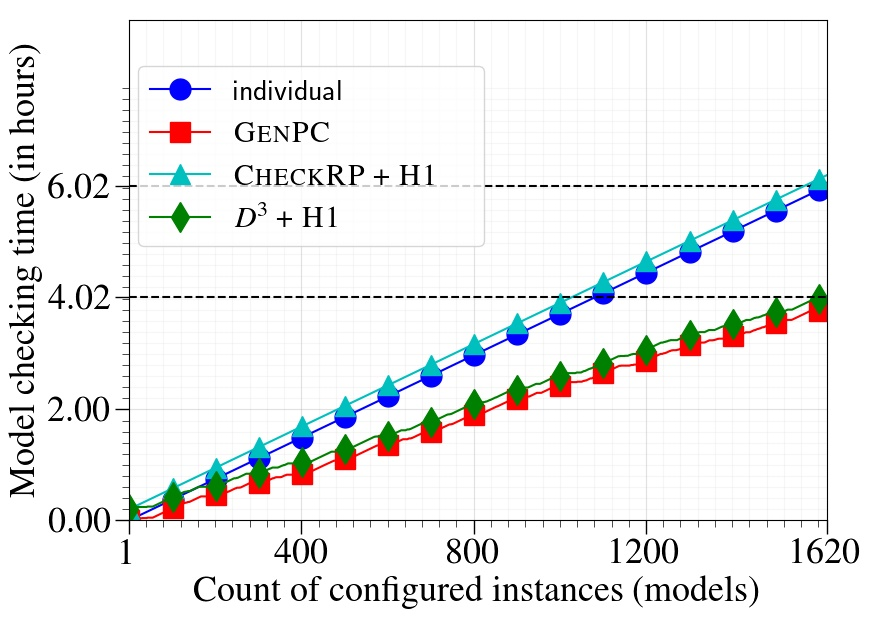
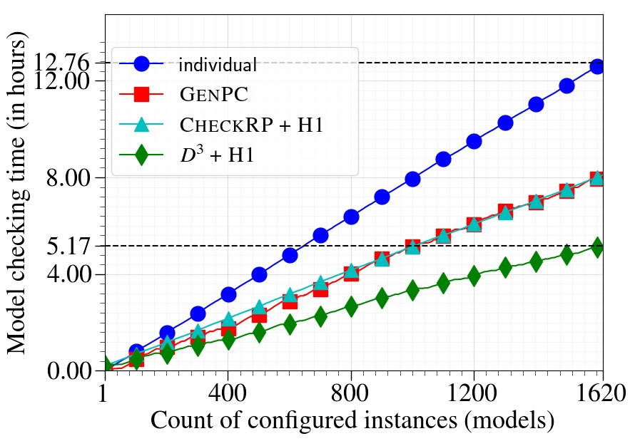
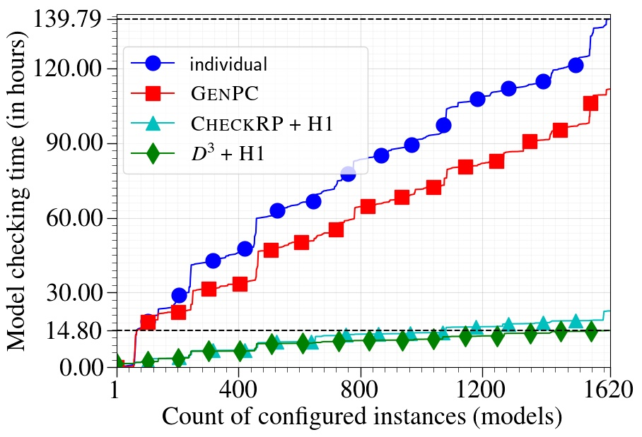
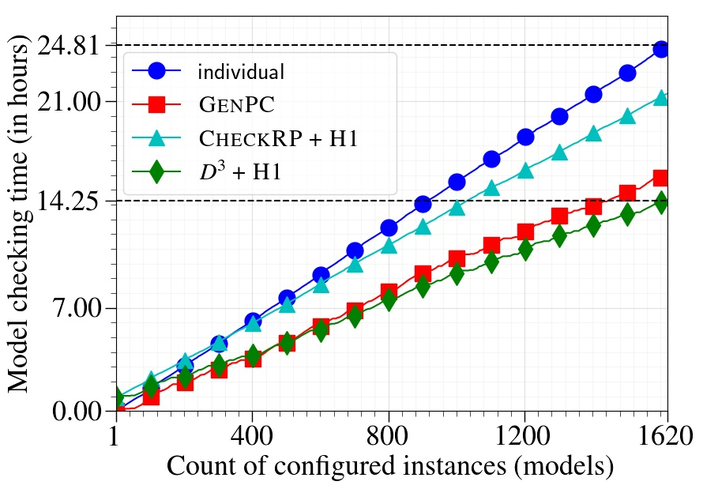
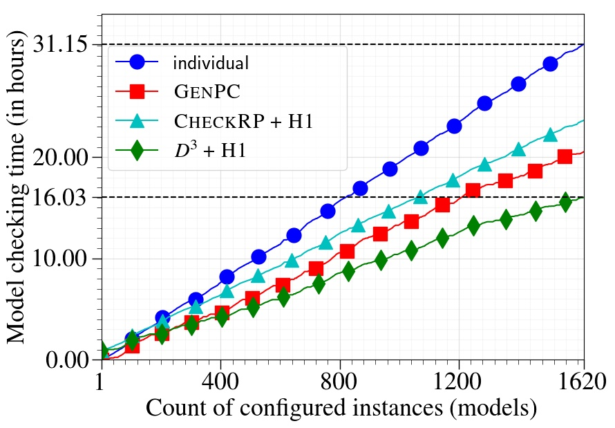
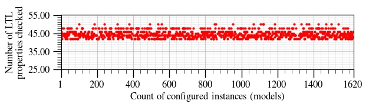
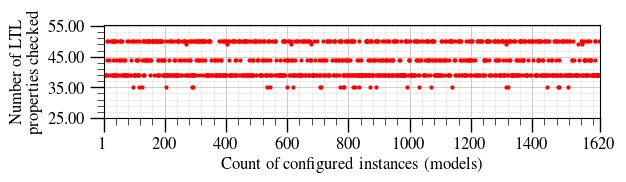
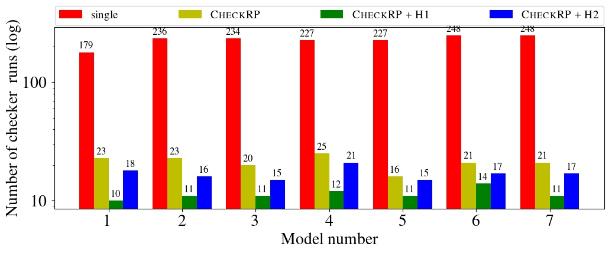

More Scalable LTL Model Checking via Discovering Design-Space Dependencies (D3)
Rohit Dureja and Kristin Yvonne Rozier
This webpage contains details and artifacts for reproducibility of the experiments in "More Scalable LTL Model Checking via Discovering Design-Space Dependencies" by R. Dureja and K.Y. Rozier.
Results
Most of the experimental results have been described in the paper. This webpage contains some additional plots for the results. The data to regenerate these plots can be found here.
NASA's NextGen Air Traffic Control System Models
The GenPC component of D3 is able to reduce the 1,620 models to 1,028. The CheckRP + Maximum Dependence (H1) component of D3 then reduces the number of properties that are checked for each model. The phases are categorized on the basis of the types of properties that are checked in the phase.
The timing results for the models are shown in Figures 1--5. The y-axis is the cumulative model checking time, and the x-axis is the count of models for which model-checking results are known by checking each of 1,620 models for all properties one-by-one (individual), checked reduced 1,028 instances for all properties (GenPC), checking all 1,620 models for reduced properties (CheckRP + H1), or checking reduced 1,028 instances for reduced properties (D3 + H1).



The plots are the same as the ones in the paper, and are reproduced here for the sake of completeness.


The number properties checked by D3 for every model vary. This is due to the fact that the next property to check is chosen to maximize the number of yet-to-be-checked properties for which the result can be determined from inter-property dependencies. Figures 6--7 show the number of LTL properties checked per model in phase IV and V, respectively by D3. Note that in neither of the phases, all 54 LTL properties are checked for a model.


Boeing AIR 6110 Wheel Braking System Models
D3 is evaluated against this benchmark to measure its performance in multi-property verification workflows. The CheckRP component of D3 is run in three modes:
- CheckRP with no heuristic - properties checked using inter-property dependencies.
- CheckRP with Maximum Dependence - unchecked property with the maximum dependent properties is checked.
- CheckRP with Property Affinity - properties are pairwise grouped and grouped properties with the maximum property affinity are checked.
The three configurations of CheckRP are compared against checking all properties one-by-one. Figure 8 shows the number of properties that are checked for the seven models in the benchmark using different configurations.
